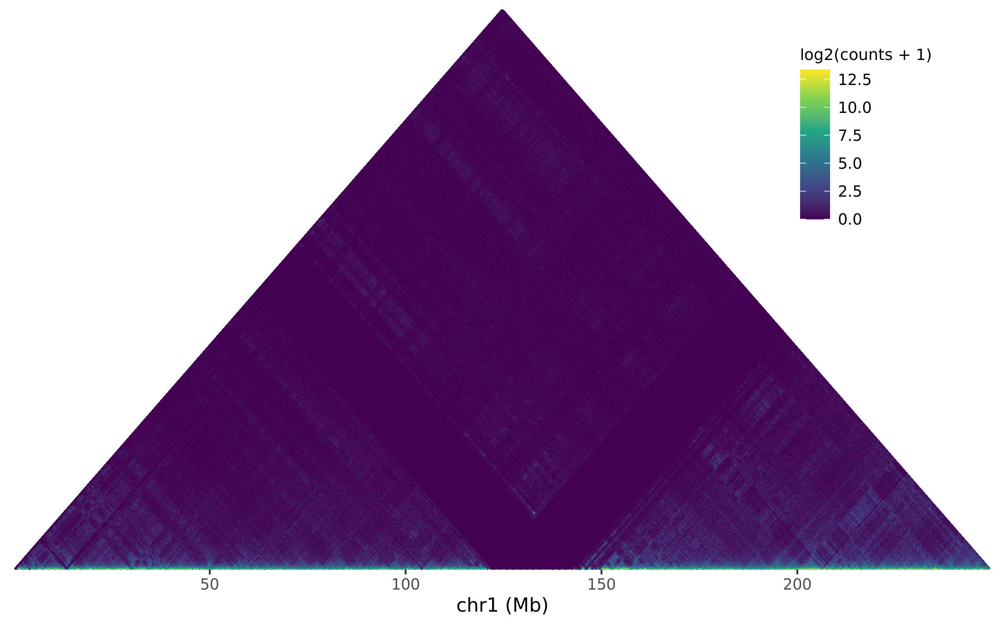
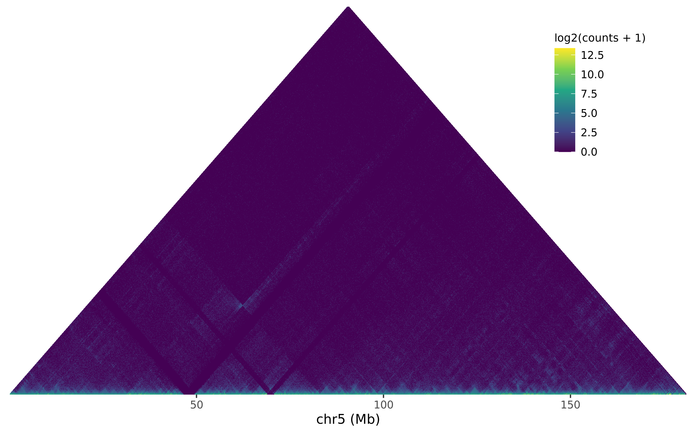
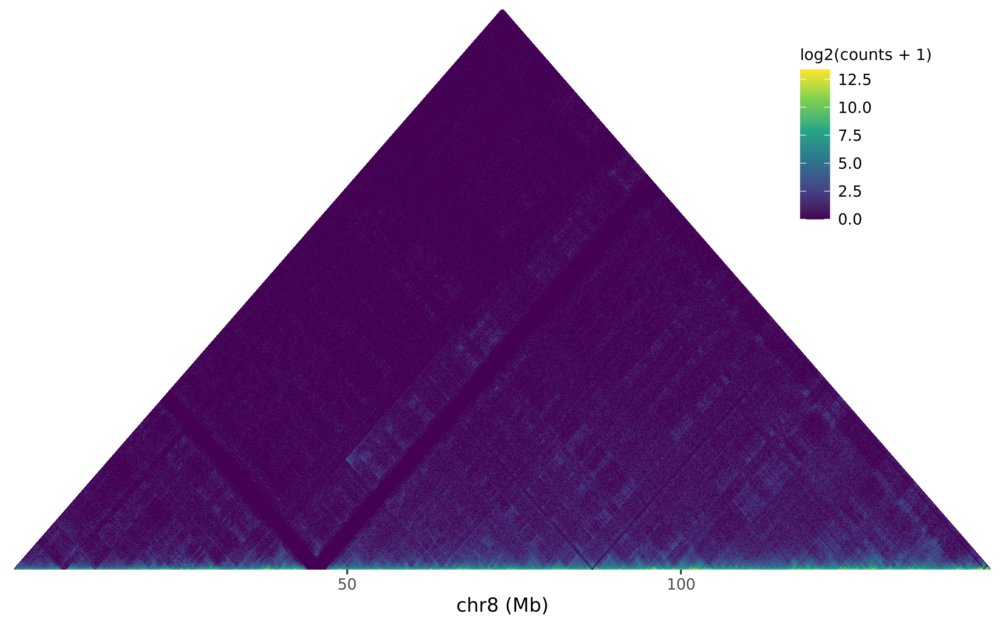
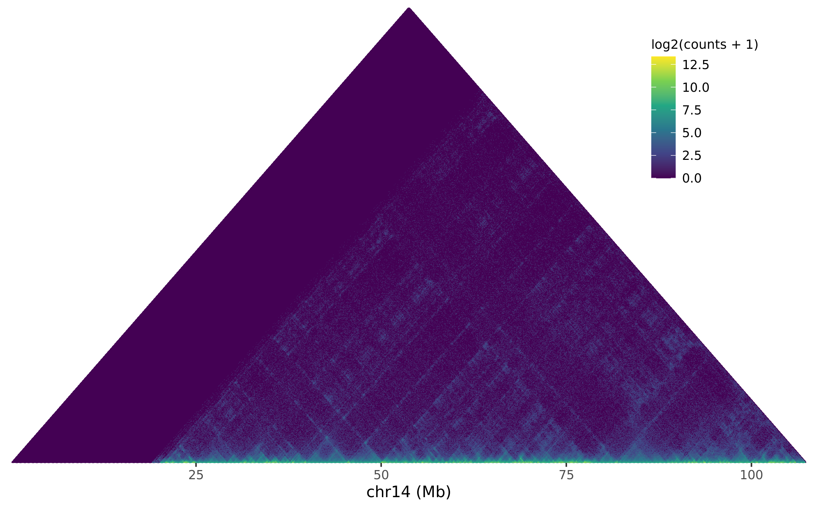
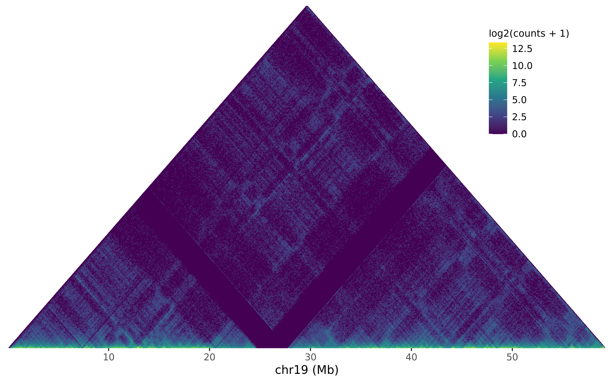
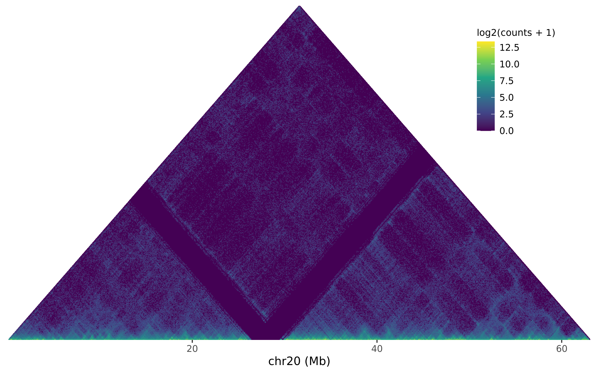
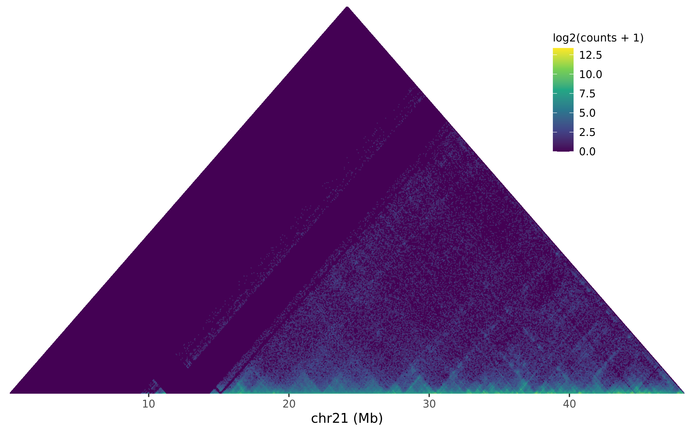
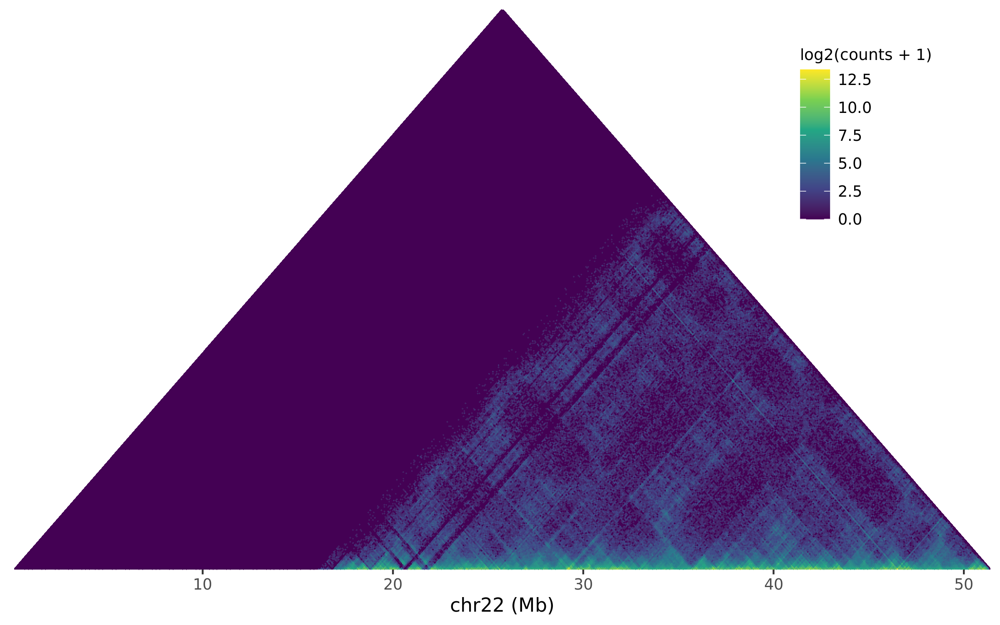

QC On HiC-Pro Output
Stephen Pederson
Dame Roma Mitchell Cancer Research Laboratories
Adelaide Medical School
University of Adelaide
Dame Roma Mitchell Cancer Research Laboratories
Adelaide Medical School
University of Adelaide
11 August, 2021
Last updated: 2021-08-11
Checks: 6 1
Knit directory: MDA-MB-453-H3K27Ac-HiChIP/
This reproducible R Markdown analysis was created with workflowr (version 1.6.2). The Checks tab describes the reproducibility checks that were applied when the results were created. The Past versions tab lists the development history.
The R Markdown file has unstaged changes. To know which version of the R Markdown file created these results, you’ll want to first commit it to the Git repo. If you’re still working on the analysis, you can ignore this warning. When you’re finished, you can run wflow_publish to commit the R Markdown file and build the HTML.
Great job! The global environment was empty. Objects defined in the global environment can affect the analysis in your R Markdown file in unknown ways. For reproduciblity it’s best to always run the code in an empty environment.
The command set.seed(20210803) was run prior to running the code in the R Markdown file. Setting a seed ensures that any results that rely on randomness, e.g. subsampling or permutations, are reproducible.
Great job! Recording the operating system, R version, and package versions is critical for reproducibility.
Nice! There were no cached chunks for this analysis, so you can be confident that you successfully produced the results during this run.
Great job! Using relative paths to the files within your workflowr project makes it easier to run your code on other machines.
Great! You are using Git for version control. Tracking code development and connecting the code version to the results is critical for reproducibility.
The results in this page were generated with repository version 3e48e81. See the Past versions tab to see a history of the changes made to the R Markdown and HTML files.
Note that you need to be careful to ensure that all relevant files for the analysis have been committed to Git prior to generating the results (you can use wflow_publish or wflow_git_commit). workflowr only checks the R Markdown file, but you know if there are other scripts or data files that it depends on. Below is the status of the Git repository when the results were generated:
Ignored files:
Ignored: .snakemake/
Ignored: MDA-MB-453-H3K27Ac-HiChIP.Rproj
Ignored: data/hic/
Ignored: data/trimmed/fastq/
Ignored: logs/
Ignored: output/GRCh37/GRCh37_MboI_fragment.bed
Ignored: output/GRCh37/GRCh37_MboI_fragment.bed.gz
Ignored: output/MaxHiC/10000/cis_interactions.txt.gz
Ignored: output/MaxHiC/10000/trans_interactions.txt.gz
Ignored: output/MaxHiC/100000/cis_interactions.txt.gz
Ignored: output/MaxHiC/100000/trans_interactions.txt.gz
Ignored: output/MaxHiC/20000/cis_interactions.txt.gz
Ignored: output/MaxHiC/20000/trans_interactions.txt.gz
Ignored: output/MaxHiC/40000/cis_interactions.txt.gz
Ignored: output/MaxHiC/40000/trans_interactions.txt.gz
Ignored: output/MaxHiC/5000/cis_interactions.txt.gz
Ignored: output/MaxHiC/5000/trans_interactions.txt.gz
Ignored: output/hic_pro/allValidPairs/
Ignored: output/hic_pro/matrix/merged_10000.matrix.gz
Ignored: output/hic_pro/matrix/merged_100000.matrix.gz
Ignored: output/hic_pro/matrix/merged_20000.matrix.gz
Ignored: output/hic_pro/matrix/merged_40000.matrix.gz
Ignored: output/hic_pro/matrix/merged_5000.matrix.gz
Ignored: output/hic_pro/matrix/raw/
Ignored: scripts/MaxHiC/
Unstaged changes:
Modified: analysis/define_interactions.Rmd
Modified: analysis/qc_hic.Rmd
Staged changes:
New: config/hicpro-config.txt
New: data/trimmed/logs/SRR12576438/SRR12576438.settings
New: output/MaxHiC/10000/ModelParameters/.snakemake_timestamp
New: output/MaxHiC/10000/ModelParameters/cis_distance_func_params.txt
New: output/MaxHiC/10000/ModelParameters/cis_hill_func_params.txt
New: output/MaxHiC/10000/ModelParameters/cis_r.txt
New: output/MaxHiC/10000/ModelParameters/trans_distance_func_param.txt
New: output/MaxHiC/10000/ModelParameters/trans_hill_func_params.txt
New: output/MaxHiC/10000/ModelParameters/trans_r.txt
New: output/MaxHiC/10000/ModelParameters/vis.txt
New: output/MaxHiC/10000/ModelParameters/vis_transform_norm_factor.txt
New: output/MaxHiC/100000/ModelParameters/.snakemake_timestamp
New: output/MaxHiC/100000/ModelParameters/cis_distance_func_params.txt
New: output/MaxHiC/100000/ModelParameters/cis_hill_func_params.txt
New: output/MaxHiC/100000/ModelParameters/cis_r.txt
New: output/MaxHiC/100000/ModelParameters/trans_distance_func_param.txt
New: output/MaxHiC/100000/ModelParameters/trans_hill_func_params.txt
New: output/MaxHiC/100000/ModelParameters/trans_r.txt
New: output/MaxHiC/100000/ModelParameters/vis.txt
New: output/MaxHiC/100000/ModelParameters/vis_transform_norm_factor.txt
New: output/MaxHiC/20000/ModelParameters/.snakemake_timestamp
New: output/MaxHiC/20000/ModelParameters/cis_distance_func_params.txt
New: output/MaxHiC/20000/ModelParameters/cis_hill_func_params.txt
New: output/MaxHiC/20000/ModelParameters/cis_r.txt
New: output/MaxHiC/20000/ModelParameters/trans_distance_func_param.txt
New: output/MaxHiC/20000/ModelParameters/trans_hill_func_params.txt
New: output/MaxHiC/20000/ModelParameters/trans_r.txt
New: output/MaxHiC/20000/ModelParameters/vis.txt
New: output/MaxHiC/20000/ModelParameters/vis_transform_norm_factor.txt
New: output/MaxHiC/40000/ModelParameters/.snakemake_timestamp
New: output/MaxHiC/40000/ModelParameters/cis_distance_func_params.txt
New: output/MaxHiC/40000/ModelParameters/cis_hill_func_params.txt
New: output/MaxHiC/40000/ModelParameters/cis_r.txt
New: output/MaxHiC/40000/ModelParameters/trans_distance_func_param.txt
New: output/MaxHiC/40000/ModelParameters/trans_hill_func_params.txt
New: output/MaxHiC/40000/ModelParameters/trans_r.txt
New: output/MaxHiC/40000/ModelParameters/vis.txt
New: output/MaxHiC/40000/ModelParameters/vis_transform_norm_factor.txt
New: output/MaxHiC/5000/ModelParameters/.snakemake_timestamp
New: output/MaxHiC/5000/ModelParameters/cis_distance_func_params.txt
New: output/MaxHiC/5000/ModelParameters/cis_hill_func_params.txt
New: output/MaxHiC/5000/ModelParameters/cis_r.txt
New: output/MaxHiC/5000/ModelParameters/trans_distance_func_param.txt
New: output/MaxHiC/5000/ModelParameters/trans_hill_func_params.txt
New: output/MaxHiC/5000/ModelParameters/trans_r.txt
New: output/MaxHiC/5000/ModelParameters/vis.txt
New: output/MaxHiC/5000/ModelParameters/vis_transform_norm_factor.txt
New: output/hic_pro/matrix/merged_100000_abs.bed.gz
New: output/hic_pro/matrix/merged_10000_abs.bed.gz
New: output/hic_pro/matrix/merged_20000_abs.bed.gz
New: output/hic_pro/matrix/merged_40000_abs.bed.gz
New: output/hic_pro/matrix/merged_5000_abs.bed.gz
Note that any generated files, e.g. HTML, png, CSS, etc., are not included in this status report because it is ok for generated content to have uncommitted changes.
These are the previous versions of the repository in which changes were made to the R Markdown (analysis/qc_hic.Rmd) and HTML (docs/qc_hic.html) files. If you’ve configured a remote Git repository (see ?wflow_git_remote), click on the hyperlinks in the table below to view the files as they were in that past version.
| File | Version | Author | Date | Message |
|---|---|---|---|---|
| Rmd | 11b0a4d | Steve Pederson | 2021-08-11 | Updated all |
| html | 11b0a4d | Steve Pederson | 2021-08-11 | Updated all |
| html | 61560a3 | Steve Pederson | 2021-08-11 | Updated all |
| html | 2227309 | Steve Pederson | 2021-08-10 | Setup for test run using raw data, not trimmed |
| Rmd | 2fdd9a5 | Steve Pederson | 2021-08-09 | Initial commit |
| html | 2fdd9a5 | Steve Pederson | 2021-08-09 | Initial commit |
library(tidyverse)
library(pander)
library(yaml)
library(scales)
library(S4Vectors)
library(glue)
library(knitr)
library(rtracklayer)
library(vroom)panderOptions("table.split.table", Inf)
panderOptions("big.mark", ",")
theme_set(theme_bw())config <- here::here("config/config.yml") %>%
read_yaml()samples <- config$samples %>%
here::here() %>%
read_tsv() %>%
mutate(
R1 = config$hicpro$pair1_ext,
R2 = config$hicpro$pair2_ext,
suffix = config$suffix
) %>%
pivot_longer(
cols = c("R1", "R2"),
names_to = "reads",
values_to = "tag"
) %>%
unite(
Filename, file, tag, suffix, sep = ""
) %>%
unite(
label, sample, reads, remove = FALSE
) %>%
mutate_if(
function(x){length(unique(x)) < length(x)},
as.factor
)Restriction Fragment Sizes
here::here("output", config$ref$build, "fragment_length.counts") %>%
read_delim(
col_names = c("count", "fragment_length"),
delim = " ",
col_types = "ii",
trim_ws = TRUE
) %>%
with(
Rle(fragment_length, count)
) %>%
as.integer() %>%
enframe(
name = NULL, value = "fragment_length"
) %>%
mutate(fragment_length = fragment_length / 1e3) %>%
ggplot(aes(fragment_length, stat(count))) +
geom_histogram(
bins = 100, fill = "grey70", colour = "black"
) +
scale_x_log10(
labels = str_remove_all(comma(10^seq(-2, 4), accuracy = 0.01), "\\.0*$"),
breaks = 10^seq(-2, 4)
) +
scale_y_continuous(labels = comma, expand = expansion(c(0, 0.05))) +
labs(
x = "Genomic Fragment Size (kb)",
y = "Number of Restriction Fragments"
)Distribution of fragment sizes from the restriction digest.
Mapping Statistics
Individual Read Mapping
here::here("output", "hic_pro") %>%
list.files(
pattern = "mmapstat",
recursive = TRUE,
full.names = TRUE
) %>%
sapply(
FUN = read_tsv,
comment = "#", col_names = c("category", "total"),
simplify = FALSE
) %>%
lapply(list) %>%
as_tibble() %>%
pivot_longer(cols = everything(), names_to = "sample") %>%
mutate(
sample = basename(sample) %>%
str_remove_all(
pattern = with(config$hicpro, glue("({pair1_ext}|{pair2_ext}).mmapstat"))
)
) %>%
unnest(value) %>%
separate(category, into = c("category", "reads")) %>%
pivot_wider(names_from = category, values_from = total) %>%
mutate(
unmapped = total - mapped
) %>%
dplyr::select(
sample, reads, trimmed_mapping = local, full_read_mapping = global, unmapped
) %>%
pivot_longer(
cols = contains("map"), names_to = "category", values_to = "total"
) %>%
arrange(desc(total)) %>%
group_by(sample, reads) %>%
mutate(
percent = percent(total / sum(total), accuracy = 0.1),
cum_total = cumsum(total),
cum_percent = cum_total/sum(total)
) %>%
ungroup() %>%
mutate(
category = str_replace_all(category, "_", " "),
category = str_to_title(category),
category = fct_inorder(category),
sample = as.factor(sample)
) %>%
ggplot(
aes(sample, total, fill = fct_rev(category))
) +
geom_col(width = 0.6) +
geom_label(
aes(y = cum_total - 0.5*total, label = percent),
fill = rgb(0.8, 0.8, 0.8, 0.8),
size = 3.1
) +
geom_text(
aes(as.integer(sample) - 0.5, y, label = percent),
data = . %>%
dplyr::filter(category != "Unmapped") %>%
group_by(sample, reads) %>%
summarise(
y = max(cum_total),
percent = percent(max(cum_percent), accuracy = 0.1),
.groups = "drop"
),
colour = hcl.colors(3, "cividis")[2],
size = 3.1,
nudge_y = -1e6,
inherit.aes = FALSE
) +
facet_wrap(~reads) +
scale_x_discrete(expand = expansion(add = c(0.7, 0.65))) +
scale_y_continuous(labels = comma, expand = expansion(c(0, 0.05))) +
scale_fill_viridis_d(option = "cividis", direction = -1) +
labs(
x = "Sample",
y = "Total Read Counts",
fill = "Category"
)Summary of mapping rates by sample and read.
Paired Mapping
paired_df <- here::here("output", "hic_pro") %>%
list.files(
pattern = "mpairstat",
recursive = TRUE,
full.names = TRUE
) %>%
sapply(
FUN = read_tsv,
comment = "#", col_names = c("category", "total", "percent"),
simplify = FALSE
) %>%
lapply(list) %>%
as_tibble() %>%
pivot_longer(cols = everything(), names_to = "sample") %>%
mutate(
sample = basename(sample) %>% str_remove_all(".mpairstat")
) %>%
unnest(value) %>%
dplyr::filter(
percent != 100, percent > 0,
category != "Reported_pairs"
) %>%
arrange(desc(percent)) %>%
group_by(sample) %>%
mutate(
cum_total = cumsum(total),
cum_percent = cumsum(percent)
) %>%
ungroup() %>%
mutate(
category = str_replace_all(category, "_", " "),
category = str_to_title(category),
category = fct_inorder(category),
sample = as.factor(sample),
percent = percent(percent/100, accuracy = 0.1)
)
paired_df %>%
ggplot(
aes(sample, total, fill = fct_rev(category))
) +
geom_col(width = 0.7) +
geom_label(
aes(sample, y = cum_total - 0.5*total, label = percent),
fill = rgb(0.8, 0.8, 0.8, 0.8),
size = 3.2
) +
geom_text(
aes(as.integer(sample) - 0.45, cum_total, label = cum_percent),
data = paired_df %>%
dplyr::filter(category != "Unmapped Pairs") %>%
group_by(sample) %>%
summarise(
cum_percent = percent(max(cum_percent)/100, accuracy = 0.1),
cum_total = max(cum_total)
),
colour = hcl.colors(4, "cividis")[3],
size = 3.2,
nudge_y = -1e6,
inherit.aes = FALSE
) +
scale_y_continuous(labels = comma, expand = expansion(c(0, 0.05))) +
scale_fill_viridis_d(option = "cividis", direction = -1) +
labs(
x = "Sample",
y = "Total Read Pairs",
fill = "Category"
)Summary of paired mapping rates by sample.
Mapping To Restriction Fragments
bl <- hcl.colors(5, "Blues")[1:4]
rd <- hcl.colors(4, "YlOrRd")
here::here("output", "hic_pro") %>%
list.files(
pattern = "mRSstat",
recursive = TRUE,
full.names = TRUE
) %>%
sapply(
FUN = read_tsv,
comment = "#", col_names = c("category", "total"),
simplify = FALSE
) %>%
lapply(list) %>%
as_tibble() %>%
pivot_longer(cols = everything(), names_to = "sample") %>%
mutate(
sample = basename(sample) %>% str_remove_all(".mRSstat")
) %>%
unnest(value) %>%
dplyr::filter(
total > 0,
category != "Valid_interaction_pairs"
) %>%
arrange(desc(total)) %>%
group_by(sample) %>%
mutate(
percent = percent(total / sum(total), accuracy = 0.1),
cum_total = cumsum(total)
) %>%
ungroup() %>%
mutate(
category = str_replace_all(category, "_", " "),
category = str_to_title(category),
category = str_replace_all(category, "[FfRr]$", toupper),
category = fct_inorder(category),
sample = as.factor(sample),
valid = str_detect(category, "Valid")
) %>%
ggplot(
aes(sample, total, fill = fct_rev(category))
) +
geom_col(width = 0.7) +
geom_label(
aes(sample, y = cum_total - 0.5*total, label = percent),
data = . %>%
dplyr::filter(percent != "0.0%"),
fill = rgb(0.8, 0.8, 0.8, 0.8),
size = 3
) +
geom_text(
aes(as.integer(sample) - 0.45, total, label = percent, colour = valid),
data = . %>%
group_by(sample, valid) %>%
summarise(
total = max(cum_total),
percent = percent %>%
str_remove_all("%") %>%
as.numeric() %>%
sum() %>%
paste0("%"),
.groups = "drop"
),
inherit.aes = FALSE,
size = 3.2,
nudge_y = -1e6,
show.legend = FALSE
) +
scale_y_continuous(labels = comma, expand = expansion(c(0, 0.05))) +
scale_fill_manual(values = c(rd, rev(bl))) +
scale_colour_manual(
values = c(rd[3], bl[3])
) +
labs(
x = "Sample",
y = "Total Read Pairs",
fill = "Category"
)
Valid mappings to restriction fragments by read orientation.
Contact Ranges
here::here("output", "hic_pro") %>%
list.files(
pattern = "mergestat",
recursive = TRUE,
full.names = TRUE
) %>%
sapply(
FUN = read_tsv,
comment = "#", col_names = c("category", "total"),
simplify = FALSE
) %>%
lapply(list) %>%
as_tibble() %>%
pivot_longer(cols = everything(), names_to = "sample") %>%
mutate(
sample = basename(sample) %>% str_remove_all("_allValidPairs.mergestat")
) %>%
unnest(value) %>%
pivot_wider(names_from = "category", values_from = "total") %>%
mutate(duplicates = valid_interaction - valid_interaction_rmdup) %>%
dplyr::rename(all_pairs = valid_interaction) %>%
pivot_longer(
cols = -all_of(c("sample", "all_pairs")),
names_to = "category",
values_to = "total"
) %>%
arrange(desc(total)) %>%
mutate(
percent = percent(total/all_pairs, accuracy = 0.1),
category = str_replace_all(category, "_", " "),
category = str_remove_all(category, " rmdup"),
category = str_to_title(category),
category = str_replace_all(category, "Interaction", "Interactions"),
category = str_replace_all(category, "Shortrange", "Short Range (<20kb)"),
category = str_replace_all(category, "Longrange", "Long Range (>20kb)"),
category = str_replace_all(category, "Duplicates", "Duplicates (Removed)"),
category = factor(
category,
levels = rev(
c(
"Duplicates (Removed)", "Valid Interactions", "Trans Interactions",
"Cis Interactions", "Cis Long Range (>20kb)", "Cis Short Range (<20kb)"
)
)
),
valid = str_detect(category, "Valid"),
cis = str_detect(category, "Cis"),
sample = as.factor(sample)
) %>%
arrange(category) %>%
ggplot(
aes(sample, total, fill = fct_rev(category))
) +
geom_col(
data = . %>%
dplyr::filter(
!valid, category != "Cis Interactions"
) %>%
droplevels(),
width = 0.7
) +
geom_label(
aes(sample, y = cum_total - 0.5*total, label = percent),
data = . %>%
dplyr::filter(
!category %in% c("Cis Interactions", "Valid Interactions")
) %>%
group_by(sample) %>%
mutate(cum_total = cumsum(total)),
fill = rgb(0.8, 0.8, 0.8, 0.8),
size = 3.2
) +
geom_text(
aes(x = as.integer(sample) - 0.45, total, label = percent),
data = . %>%
dplyr::filter(valid),
size = 3.2,
colour = hcl.colors(4, "cividis")[3],
nudge_y = -1e6,
inherit.aes = FALSE
) +
geom_text(
aes(x = as.integer(sample) - 0.45, total, label = percent),
data = . %>%
dplyr::filter(category == "Cis Interactions"),
size = 3.2,
colour = hcl.colors(4, "cividis")[2],
nudge_y = -1e6,
inherit.aes = FALSE
) +
scale_y_continuous(labels = comma, expand = expansion(c(0, 0.05))) +
scale_fill_viridis_d(option = "cividis", direction = -1) +
labs(
x = "Sample",
y = "Total Read Pairs",
fill = "Category"
)Plot showing contact ranges. Interactions corresponding to PCR duplicates were excluded and are shown in yellow. Cis Interactions are considered the most reliable and combined totals are shown as percentages.
HiC Fragment Sizes
for (s in levels(samples$sample)) {
cat("###", s, "\n")
cat("\n")
png_path <- file.path("assets", glue("plotHiCFragmentSize_{s}.png"))
cat(
glue(
""
),
"\n\n"
)
}SRR12576438
Fragment sizes for SRR12576438
All Cis Interactions
bs <- str_split(config$hicpro$bin_size, pattern = " ")[[1]] %>%
as.integer() %>%
max()The sets of interactions were visualised for all chromosomes using the largest bin size (100kb) to provide a ‘zoomed-out’ view of each chromosome.
grl <- here::here(
glue("output/hic_pro/matrix/merged_{bs}_abs.bed.gz")
) %>%
import.bed() %>%
setNames(.$name) %>%
split(f = seqnames(.))
df <- here::here(
glue("output/hic_pro/matrix/merged_{bs}.matrix.gz")
) %>%
vroom(
col_names = c("bin1", "bin2", "counts"),
col_types = "cci"
)
count_lim <- range(log2(df$counts + 1))
for (chr in setdiff(names(grl), "chrY")) {
message(glue("Plotting {chr}..."))
df %>%
dplyr::filter(
bin1 %in% grl[[chr]]$name,
bin2 %in% grl[[chr]]$name,
) %>%
mutate(
across(
starts_with("bin"),
factor,
levels = names(grl[[chr]])
),
counts = log2(counts + 1)
) %>%
bind_rows(
setNames(., c("bin2", "bin1", "counts"))
) %>%
full_join(
tidyr::expand(., bin1, bin2),
by = c("bin1", "bin2")
) %>%
arrange(bin1, bin2) %>%
ggplot(
aes(
as.integer(bin1)*bs/1e6, as.integer(bin2)*bs/1e6, fill = counts)
) +
geom_raster() +
scale_x_continuous(
expand = expansion(c(0, 0)),
name = glue("{chr} (Mb)")
) +
scale_y_continuous(
expand = expansion(c(0, 0)),
name = glue("{chr} (Mb)")
) +
scale_fill_viridis_c(
name = "log2(counts + 1)",
na.value = "#4B0055",
limits = count_lim
)
ggsave(
here::here(
"docs", "assets", glue("hic_interactions_{bs}_{chr}.png")
),
width = 8, height = 6
)
}chr1

chr2

chr3
chr4
chr5

chr6
chr7
chr8

chr9
chr10

chr11
chr12
chr13
chr14

chr15
chr16

chr17
chr18
chr19

chr20

chr21

chr22

chrX
sessionInfo()R version 4.1.0 (2021-05-18)
Platform: x86_64-conda-linux-gnu (64-bit)
Running under: Ubuntu 20.04.2 LTS
Matrix products: default
BLAS/LAPACK: /mnt/d/MDA-MB-453-H3K27Ac-HiChIP/.snakemake/conda/43a172b7ea1b6342d4287fa895467c3d/lib/libopenblasp-r0.3.17.so
locale:
[1] LC_CTYPE=C.UTF-8 LC_NUMERIC=C LC_TIME=C.UTF-8
[4] LC_COLLATE=C.UTF-8 LC_MONETARY=C.UTF-8 LC_MESSAGES=C.UTF-8
[7] LC_PAPER=C.UTF-8 LC_NAME=C LC_ADDRESS=C
[10] LC_TELEPHONE=C LC_MEASUREMENT=C.UTF-8 LC_IDENTIFICATION=C
attached base packages:
[1] parallel stats4 stats graphics grDevices utils datasets
[8] methods base
other attached packages:
[1] vroom_1.5.4 rtracklayer_1.52.0 GenomicRanges_1.44.0
[4] GenomeInfoDb_1.28.0 IRanges_2.26.0 knitr_1.33
[7] glue_1.4.2 S4Vectors_0.30.0 BiocGenerics_0.38.0
[10] scales_1.1.1 yaml_2.2.1 pander_0.6.4
[13] forcats_0.5.1 stringr_1.4.0 dplyr_1.0.7
[16] purrr_0.3.4 readr_1.4.0 tidyr_1.1.3
[19] tibble_3.1.3 ggplot2_3.3.5 tidyverse_1.3.1
[22] workflowr_1.6.2
loaded via a namespace (and not attached):
[1] matrixStats_0.60.0 bitops_1.0-7
[3] fs_1.5.0 bit64_4.0.5
[5] lubridate_1.7.10 httr_1.4.2
[7] rprojroot_2.0.2 tools_4.1.0
[9] backports_1.2.1 utf8_1.2.2
[11] R6_2.5.0 DBI_1.1.1
[13] colorspace_2.0-2 withr_2.4.2
[15] tidyselect_1.1.1 bit_4.0.4
[17] compiler_4.1.0 git2r_0.28.0
[19] Biobase_2.52.0 cli_3.0.1
[21] rvest_1.0.1 xml2_1.3.2
[23] DelayedArray_0.18.0 labeling_0.4.2
[25] digest_0.6.27 Rsamtools_2.8.0
[27] rmarkdown_2.10 XVector_0.32.0
[29] pkgconfig_2.0.3 htmltools_0.5.1.1
[31] MatrixGenerics_1.4.0 highr_0.9
[33] dbplyr_2.1.1 rlang_0.4.11
[35] readxl_1.3.1 rstudioapi_0.13
[37] farver_2.1.0 BiocIO_1.2.0
[39] generics_0.1.0 jsonlite_1.7.2
[41] BiocParallel_1.26.0 RCurl_1.98-1.3
[43] magrittr_2.0.1 GenomeInfoDbData_1.2.6
[45] Matrix_1.3-4 Rcpp_1.0.7
[47] munsell_0.5.0 fansi_0.4.2
[49] lifecycle_1.0.0 stringi_1.7.3
[51] whisker_0.4 SummarizedExperiment_1.22.0
[53] zlibbioc_1.38.0 grid_4.1.0
[55] promises_1.2.0.1 crayon_1.4.1
[57] lattice_0.20-44 Biostrings_2.60.0
[59] haven_2.4.3 hms_1.1.0
[61] pillar_1.6.2 rjson_0.2.20
[63] reprex_2.0.1 XML_3.99-0.6
[65] evaluate_0.14 modelr_0.1.8
[67] tzdb_0.1.2 vctrs_0.3.8
[69] httpuv_1.6.1 cellranger_1.1.0
[71] gtable_0.3.0 assertthat_0.2.1
[73] xfun_0.25 broom_0.7.9
[75] restfulr_0.0.13 later_1.2.0
[77] viridisLite_0.4.0 GenomicAlignments_1.28.0
[79] ellipsis_0.3.2 here_1.0.1